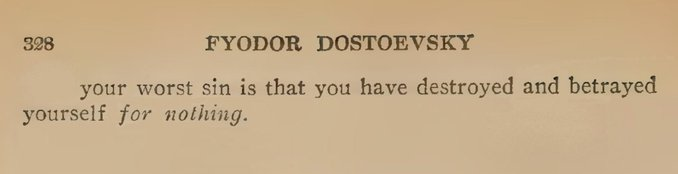

Caught in 4k
not really in 4k, there was a window between us.
I didn't catch her, she tied a knot on my hook. Like crazy bro, lights are on and she's turning lighter like crazy. also knock on my windows, what am I supposed to do? Light the ciggy for you?
Idk if anyone in the family knows about this. Delhi girls man. For them it's like 1 i-pill a day keeps the doctor away, iykyk. I could blackmail her, but I don't think that's going to work out, little me~delhi in her.
a bit of context
One ciggy lasts 2 min, and she was coughing the first time this happened. Hmm, evidence ig. Says she brought some from Delhi. Delhi is the hub man.
All this, again, makes me retrospect my belief. Is being good good?

Does sin cancel out sin, if yes then i'm yet to commit a sin.
Edit: 2025-02-06
I'm gonna lose track at one point,
6: 00:47am
7: 00:03am
Blog Creation: 2025-02-05
Last edited on: 2025-02-12